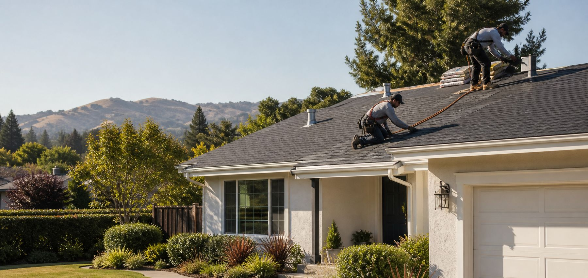

Inspection & diagnosis
Trace leaks, review roof condition, and turn the findings into a clear next step.

A Rancho Cordova website concept shaped around the details customers mention: clear inspections, careful flashing, responsive crews, and clean finishes.
LISTED PHONE(916) 864-9770
LISTED ADDRESS12178 Tributary Point Dr, Rancho Cordova
SITE STATUSIndependent pitch concept
The pitch focuses the page on the work customers can understand and act on—without adding unverified promises.
Trace leaks, review roof condition, and turn the findings into a clear next step.
Address shingles, penetrations, skylights, decking, and the vulnerable transitions between them.
Plan the tear-off, material system, ventilation, and drainage as one coordinated job.
Move rain away from edges, entries, walls, and foundations with deliberate runoff paths.

Strong review language clusters around explanations, responsiveness, crew professionalism, and cleanup. The site turns those moments into the sales story.
Public Google review excerpts, presented as short highlight cards. The overall score is intentionally not displayed.
“Went above and beyond in serving us with good information.”
Jann L. Murray-García, MD MPH Google review
“Created a temporary fix for our skylight while we waited for a more permanent solution.”
Jann L. Murray-García, MD MPH Google review
“Quick, thorough and professional in installing the new skylight.”
Jann L. Murray-García, MD MPH Google review
“We are beyond satisfied!”
Jann L. Murray-García, MD MPH Google review
“Friendly and prompt service, would recommend.”
Ryan Crews Google review
“I’ve had two roof repairs with Garner and both times their service has been great.”
David W Google review
“Provided a clear summary of the issues found and the recommended work.”
David W Google review
“I’d happily use them again.”
David W Google review
“Professional, pleasant and really knows his stuff.”
Michelle Tompkins Google review
“Able to explain complicated problems in simple terms.”
Michelle Tompkins Google review
“Cares about doing good work at a fair price.”
Michelle Tompkins Google review
“The process from start to finish was smooth.”
Bernadette Jeffs Google review
“The work was impeccable.”
Bernadette Jeffs Google review
“The installation crew did a great job on a very challenging roof installation.”
Katrina Hiott Google review
“They did schedule a Saturday crew to help get my project caught up before a big storm.”
Katrina Hiott Google review
“Turned out to be painless and easy for me.”
Kimberly Clough Google review
“I had previously called 5 roofing companies and none of them would come out and repair or even look at my house.”
Brenden Hetrick Google review
“Garner Roofing was amazing.”
Brenden Hetrick Google review
“Thoroughly explained everything to me.”
Rita V. Public review excerpt
“Polite and friendly, answered my questions, showed pictures of their work and left everything clean.”
Rita V. Public review excerpt
Review text was collected from the supplied Google Maps listing and public pages that reproduce Google-attributed reviews. Longer reviews are split into concise, attributed moments; no score is shown.
This demo shows how a short estimate request could work. It does not send or store information.
LISTED PHONE(916) 864-9770Nothing was sent or stored. A production site could connect this action only after the business confirms its current contact and operating details.